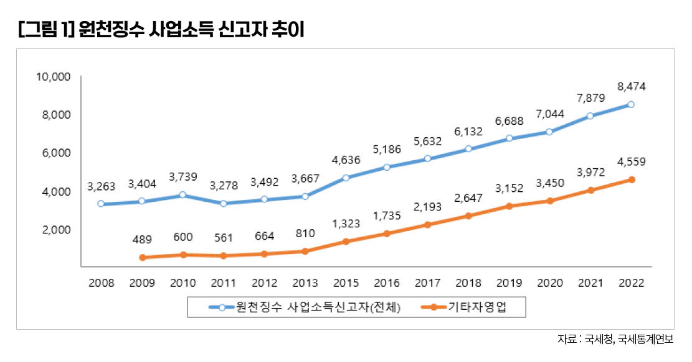
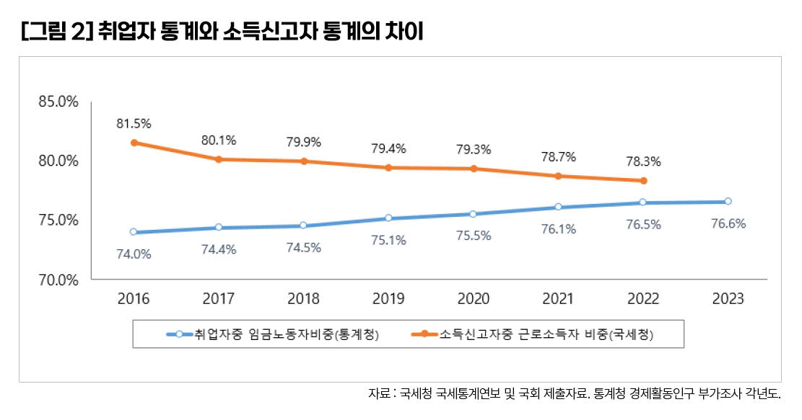
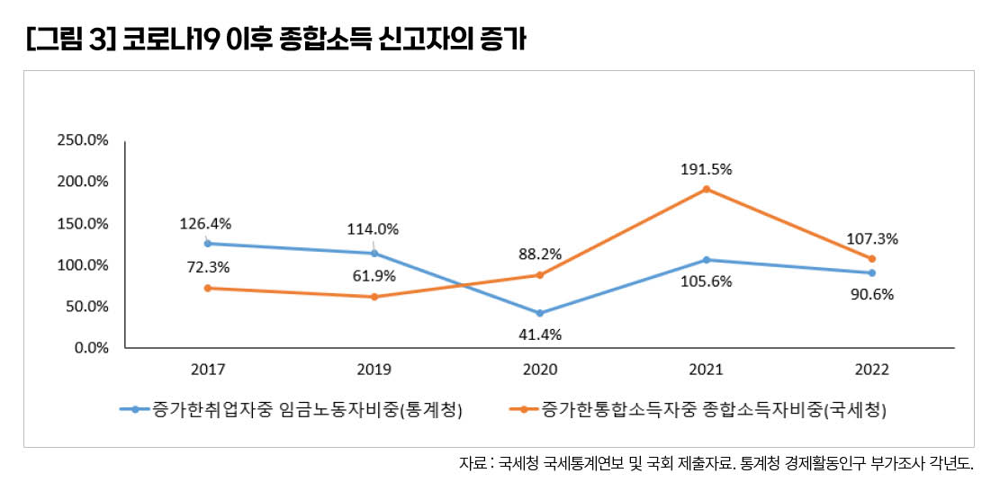

박영삼의 통계로 보는 노동
급증하는 3.3% 인적용역, 고용통계와 국세통계 괴리 커져
취업자는 임금노동자 느는데 소득신고는 사업소득자 주도 … 가짜 개인사업자 증가 주목해야
원천징수 인적용역 사업소득자가 최근 수년간 급격히 증가했다. 원천징수 사업소득자란 사업소득이 있는 경우 원칙적으로 자신이 스스로 종합소득세 확정신고를 해야 하지만 납세편의 등을 위해 인건비나 용역대가를 지급하는 원천징수의무자가 해당 대금을 지급하면서 사업소득세를 먼저 차감해서 지급하고 국세청에 이를 신고함으로써 납세의무가 종결되는 사업소득자를 말한다. 이들 중에는 의사와 수의사 등 보건의료 용역이나 작곡가, 저술가, 배우, 운동선수 같은 직업도 있지만 별도의 사업체나 시설 없이 노무나 용역을 제공하는 다양한 사람들이 원천징수 사업소득자에 포함된다.

그중에서도 다른 사람을 전혀 고용하지 않고 “일의 성과에 따라 수당이나 이와 유사한 성질의 대가를 받는 인적용역”의 경우, 사실상 노동자와 거의 다를 바 없는 근로소득에 해당하지만 세법상으로는 노동자가 아니라 인적용역 사업소득자로 분류된다.
사업주가 인적용역을 사용하는 경우 경비처리를 위해서는 반드시 코드를 입력해야 하는데, 보험설계사(940906)나 방문판매원(940908) 등 특수고용이나 퀵서비스(940918)와 대리운전(940913) 등 일부 플랫폼 종사자처럼 해당 업종이 특정되는 경우도 있다. 하지만 실체를 알기 어려운 기타자영업(940909)이 최근 증가세를 주도하고 있고 숫자도 제일 많다.
원천징수 ‘인적용역’ 사업소득자의 급속한 증가
국세청 통계로는 원천징수 인적용역 대상자가 지속적으로, 그리고 최근에는 훨씬 더 급격히 증가하고 있다. 2008년 326만명 규모였던 인적용역 과세자는 2018년에는 669만명으로 2배 이상 증가했고 2022년에는 847만명으로 또다시 크게 늘었다. 이 중에서도 업종이나 직종이 특정되지 않는 기타자영업이 가장 크게 늘었는데, 2009년 49만명에서 2022년 456만명으로 10배 가까이 늘어 전체 인적용역 사업소득자에서 차지하는 비중은 2009년 14%에서 2022년에는 54%로 과반을 점유했다. 특히 2016년 이후에는 늘어난 인적용역 사업소득자의 80% 이상이 기타자영업에서 발생하고 있다.

이런 배경은 무엇일까. 홈택스를 이용한 소득신고의 간편화에 따라 소득신고가 증가한 측면이 있다. 또 특고·플랫폼 종사자·예술인 고용보험 적용확대와 소득파악 주기의 단축에 따른 소득파악률 제고, 플랫폼산업의 발달과 온라인쇼핑과 배달서비스의 확대, ’N잡러’로 일컬어지는 복수일자리 종사자의 증가 등 다양한 요인을 꼽을 수 있다.
그러나 다른 한편으로 이러한 인적용역 소득자 증가에는 위장 자영업자가 상당수 포함돼 있다. 실제로는 임금노동자지만 근로계약 대신 프리랜서·개인사업자 형태를 취하고 인건비에 3.3% 원천징수 사업소득세를 징수하는 방식이다. 특고와 플랫폼 어디에도 해당되지 않는 기타자영업이 인적용역 증가세의 중심을 이루고 있다는 점도 이를 의심하게 만든다.
임금노동자 비중 74→76.5% 늘 때…근로소득 납세자 비중 81.5→78.3% 줄어
최근 들어 통계청의 고용통계와 국세청의 소득신고자 통계 간 괴리가 커지는 현상을 주목할 필요가 있다.
통계청의 경제활동인구조사에서는 임금노동자가 지속적으로 늘면서 전체 취업자에서 임금노동자가 차지하는 비중이 꾸준히 증가하고 있다. 경제활동인구 부가조사 기준으로 2016년 임금노동자는 1천964만명으로 전체 취업자 2천670만명 중 74.0%였는데, 2022년에는 취업자가 2천868만명으로 198만명 증가하는 동안 임금노동자는 2천195만명으로 221만명이나 늘어 76.5%를 차지했다. 이 기간 동안 비임금취업자는 23만명이 감소해 비임금노동자 비중은 26%에서 23.5%로 줄었다.
그런데 국세청의 국세통계에서는 같은 기간 근로소득자가 1천774만명에서 2천54만명으로 280만명 늘었다. 근로소득과 종합소득을 인별로 합산한 통합소득자에서 근로소득자가 차지하는 비중은 81.5%에서 78.3%로 오히려 감소했다. 대신 종합소득자는 2016년 587만명에서 2022년 1천28만명으로 242만명이나 증가했고, 이 가운데 근로소득이 함께 있는 혼합소득자(부업소득)를 제외한 순수종합소득만 있는 신고자도 167만명이나 증가해 순수종합소득자 비중 역시 15.2%에서 19.0%로 늘어났다. 이처럼 취업자 중에서 임금노동자의 비중은 지속 느는데 반해 소득신고자 중 근로소득자의 비중은 지속 하락하는 특이한 현상이 발생하고 있다.

소득세 징수 편의보다 중요한 노동권·사회안전망
코로나 팬데믹을 거치면서 이러한 간극은 더욱 커졌다. 2021년 취업자는 52만명 증가했는데 임금노동자가 55만명 증가했고 비임금취업자는 3만명 감소했다. 그런데 국체청 근로소득자 증가는 46만명 수준이고, 종합소득자는 무려 149만명 증가했다. 2021년에는 통합소득 신고자 증가분의 191.5%, 2022년에는 107.3%를 차지하며 를 종합소득 신고자들이 차지했다. 소득신고 증가를 종합소득자들이 주도하는 셈이다. 더구나 근로소득과의 교집합 부분을 제외한 순수한 종합소득자도 31만명 증가해 통계청 경제활동인구 통계에서 비임금근로자 감소 추세와는 전혀 다른 양상을 보인다. 통계청 취업자 통계에서 임금노동자로 집계되는 상당수가 국세청 소득신고에서는 근로소득이 아닌 사업소득을 신고하는 형태를 취한다는 의미다.

사업소득세 3.3%만 납부하는 인적용역 원천징수 사업소득자의 증가는 국세청 입장에서 보면 나름 ’세원’이 넓어진다는 것을 의미한다. 어쨌든 소득세를 간편하게 징수할 수 있기 때문이다. 하지만 제대로 된 공정과세, 노동자의 권리보호, 사회안전망의 관점에서는 ’탈세’이자 ’위법’이라고 봐야 한다.
고려대 노동문제연구소 노동데이터센터장 (youngsampk@gmail.com)